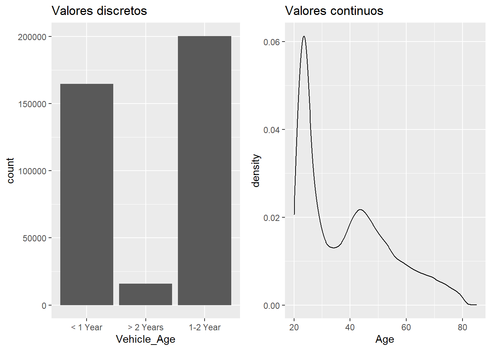
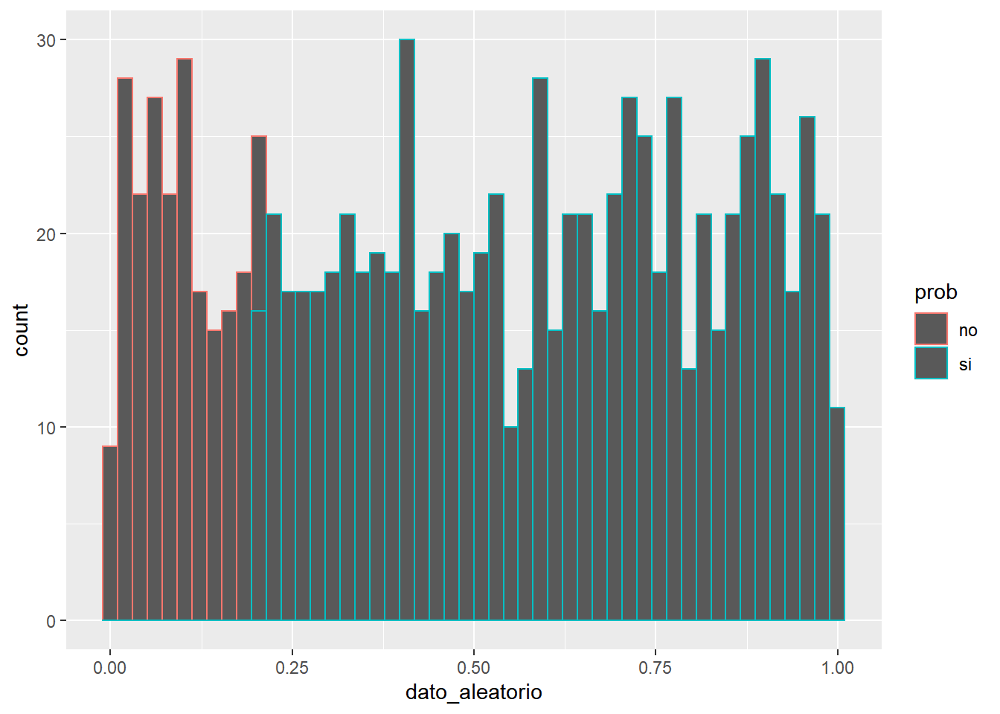
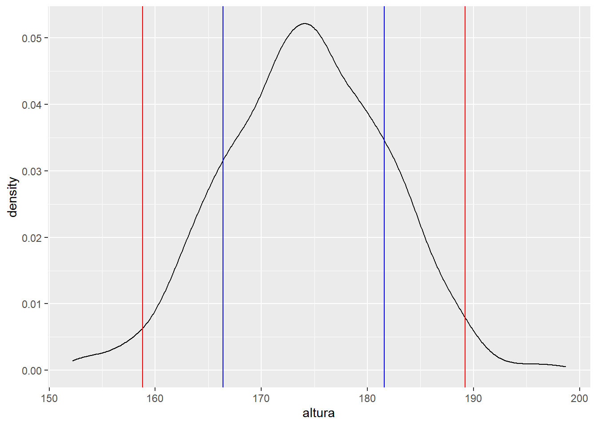
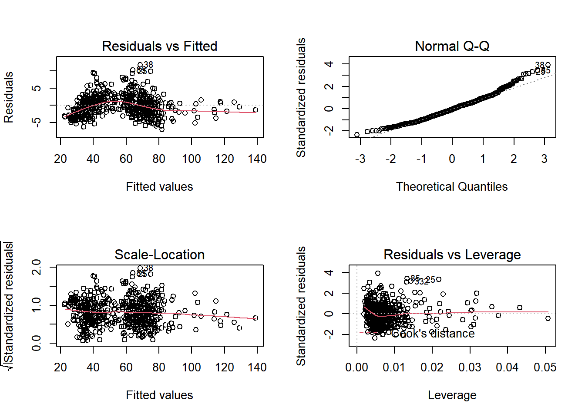
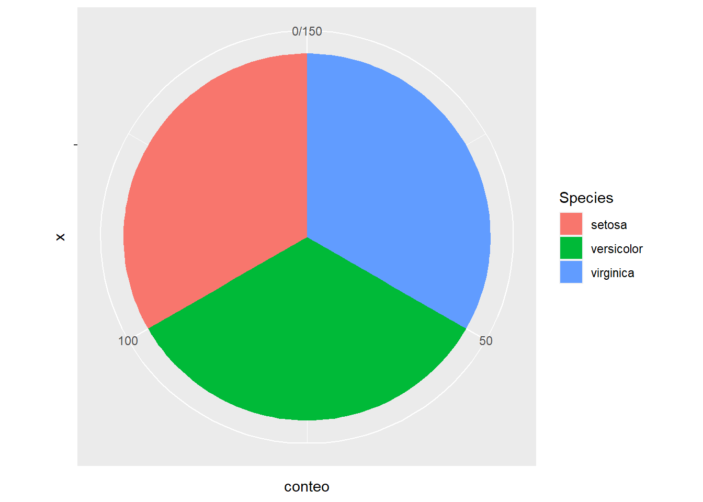
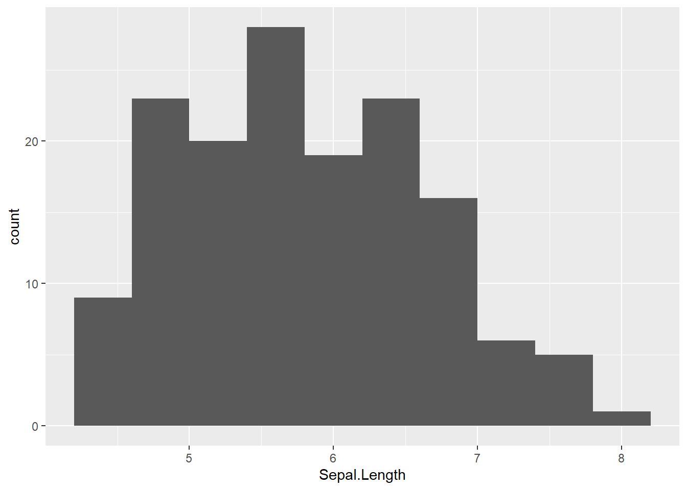

Capítulo 10 Probabilidad y distribuciones
En este punto es necesario realizar un paréntesis en el hilo conductor del ensayo. Hasta el momento se han descrito variables, limpiado y depurado datos y se hizo mención al rol que desempeña cada variable en el conjunto de datos. Entre esas variables hay una de ellas que juega un rol fundamental para el científico de datos, la variable target o variable respuesta. Si no existe esa variable el científico de datos se enfrenta a un análisis no dirigido, no conoce como es el problema que representan las variables y las observaciones. Este trabajo se centra en el caso contrario, el conjunto de datos recoge la variable target o recoge las variables en bruto necesarias para crearla y esa variable dirige el tipo de análisis.
¿Por qué el científico de datos ha de tener conocimientos de probabilidad y distribuciones? Porque esa variable target define un evento que puede tener una probabilidad o función de probabilidad asociada y por lo tanto tiene una distribución. Ese evento ha de presentar unos valores que, representados gráficamente, tengan una forma conocida.
¿Por qué ha de ser una forma conocida? Porque la forma de la variable, los posibles valores que toma la variable respuesta, la distribución de la variable que da respuesta a mi problema define el tipo de análisis. La siguiente imagen resume algunos de los problemas/análisis/distribuciones con su correspondiente variable respuesta. Son problemas habituales a los que se puede enfrentar un científico de datos. Si no hay variable respuesta el análisis no está dirigido o supervisado por ninguna variable target.

Si un evento no tiene una forma o una distribución conocida el científico de datos puede transformar los valores para que lo sea. Es habitual trabajar con eventos Si/No - 1/0. Puede resultar más práctico y más sencillo analizar qué clientes tienen saldo en un fondo de inversión que analizar el propio saldo.
10.1 Conceptos básicos de probabilidad
A continuación se enumeran una serie de conceptos importantes que irán articulando el modo en el que se plantea un análisis.
Un fenómeno aleatorio es aquel que no se puede predecir pero que sin embargo conocemos todos los posibles resultados (Ej: Lotería, lanzar un dado,…). Este suceso es contrario a los fenómenos deterministas donde conocemos todos los factores del experimento y sabemos de antemano el resultado (Ej: experimentos en laboratorios).
El espacio muestral es aquel conjunto que recoge todos los posibles resultados de un experimento aleatorio. (Lanzar un dado: 1,…,6). Se llama evento a cualquier subconjunto de este espacio muestral. (Sacar un 5 al tirar el dado). Hay eventos generados por variables aleatorias que se consideran funciones matemáticas que denotadas con letras X, Y, etc. X puede ser (por ejemplo) el número de 5’s al tirar el dado 5 veces, el número de siniestros que puede tener un riesgo en un periodo de tiempo o el pasivo estimado de un cliente fuera de nuestra entidad bancaria, en este último caso pueden interesarnos los clientes con un pasivo estimado superior a 30.000 € fuera de la entidad para que el evento sólo tenga dos posibles valores si/no.
Probabilidad consiste en asignar a cada evento del espacio muestral un número entre 0 y 1 (no un porcentaje), pero más importante que su definición son las características de la probabilidad:
- La probabilidad de cualquier evento siempre es mayor o igual a 0.
- La probabilidad de que se produzca al menos uno de los eventos del espacio muestral es 1.
- La probabilidad de los eventos es mutuamente excluyentes, lo que nos permite aseverar que la probabilidad de que suceda un evento u otro evento es la suma de las probabilidades. La probabilidad de sacar un 3 con un dado es 1/6, la probabilidad de sacar un 3 o un 5 es 2/6.
Además hay ocasiones en las que la probabilidad de un evento está condicionada a que suceda otro evento a este hecho se le denomina probabilidad condicionada. En el caso de que un evento no influya en otro estamos ante sucesos independientes.
A la probabilidad de que suceda un evento A cuando sucede un evento B se le denomina probabilidad de A condicionada a B. Cuando un suceso B no influye en la probabilidad de A se dice que A y B son sucesos independientes.
10.2 Distribución de un evento
En pocas líneas se han planteado los conceptos básicos que van a describir la distribución de una variable. A lo largo del ensayo siempre se hace mención a la distribución como la forma que tienen los valores, formalmente esta distribución es una función matemática que asigna una probabilidad de ocurrencia a cada valor conocido que toma la variable. Si la variable es discreta las probabilidades serán función de la pertenencia a cada grupo de la variable discreta, en el caso de las variables continuas esa función de probabilidad se dispone de funciones de densidad y obtener la probabilidad de un suceso sería el área bajo la función de densidad.
Esta diferencia se puede apreciar en dos variables del conjunto de datos de trabajo.
library(tidyverse)
if(!require(gridExtra)) install.packages("gridExtra")
train <- read.csv("./data/train.csv")
c1 = train %>% ggplot(aes(x=Vehicle_Age)) + geom_bar() +ggtitle("Valores discretos")
c2 = train %>% ggplot(aes(x=Age)) + geom_density() +ggtitle("Valores continuos")
grid.arrange(c1, c2, ncol=2)
En el caso de los valores discretos la probabilidad de pertenecer a alguno de los grupos de Vehicle_Age será:
train %>% group_by(Vehicle_Age) %>% summarise(pct= round(n()/nrow(train),3))## # A tibble: 3 x 2
## Vehicle_Age pct
## <chr> <dbl>
## 1 < 1 Year 0.432
## 2 > 2 Years 0.042
## 3 1-2 Year 0.526En esta situación la probabilidad coincide con el porcentaje de observaciones, de ahí la tendencia a transformar una probabilidad en un porcentaje, en la medida de lo posible el científico de datos debe evitar esa transformación. De igual modo se puede plantear para la variable Age ya que es una variable “peculiar” donde la línea entre la cantidad o la cualidad con orden es muy fina. Si se plantea como numérica es necesario recordar que una integral calcula el área bajo una curva en un determinado intervalo, por lo que se puede obtener el área que hay por debajo de un valor hasta el siguiente. Por ejemplo, la probabilidad de tener 50 años o más en la población de trabajo, en la encuesta realizada, es:
train %>% ggplot(aes(x=Age)) + geom_density() + ggtitle("Probabilidad de tener más de 50 años en los datos") +
geom_vline(xintercept = 50, color = "red") + geom_segment(aes(x = 80, y = 0.025, xend = 64, yend = 0.005),
arrow = arrow(length = unit(0.5, "cm")), color='red')
# Es necesario obtener la función de densidad
densidad <- density(train$Age)
integrate(approxfun(densidad), lower=50, upper=max(train$Age))## 0.2412278 with absolute error < 4.9e-06Lo que queda por debajo de la curva de densidad, donde apunta la flecha creada con geom_segment, es la probabilidad de tener 50 años o más en los datos de la población en estudio.
Se puede hilar un argumento del siguiente modo: 1. Una variable numérica se describe mediante un histograma o una gráfica de densidad que es una función continua 2. Esa función continua recoge el total de observaciones de la muestra 3. El área que deja por debajo de la función nos devuelve la probabilidad de un intervalo de valores de la muestra
Si se obtiene la probabilidad de tener 44 años en el conjunto de datos de trabajo:
integrate(approxfun(densidad), lower=44, upper=45)## 0.02153075 with absolute error < 3.6e-07Esta probabilidad es muy similar a la probabilidad si se considera la variable como un factor:
train %>% group_by(Age) %>% summarise(pct=round(n()/nrow(train),3)) %>% filter(Age==44)## # A tibble: 1 x 2
## Age pct
## <int> <dbl>
## 1 44 0.022En este caso la variable Age tiene una forma que describe su función de densidad, pero se ha hecho mención a que la forma de la variable ha de ser conocida para facilitar la labor al científico de datos.
10.2.1 Distribuciones conocidas
En capítulos anteriores se distinguieron dos tipos de variables, variables discretas o variables numéricas por lo que las distribuciones conocidas son discretas o continuas. Dentro de las continuas se tienen distribuciones naturales o artificiales, estas últimas muy relevantes para la realización de modelos matemáticos y que se tratarán cuando se hable de inferencia. Hay múltiples distribuciones, en R se emplea help("Distributions") para presentar que distribuciones disponibles en la base de R. De todas ellas se considera que el científico de datos debe conocer:
- Distribuciones discretas
- Bernoulli
- Binomial
- Poisson
- Distribuciones continuas
- Naturales
- Uniforme
- Normal
- Gamma
- Artificiales (se verán en capítulos posteriores)
- T-Student
- F-Snedecor
- Chi-Cuadrado
- Naturales
Existen más distribuciones de especial relevancia, pero en una primera aproximación se consideran estas como las fundamentales. A continuación se analizan una a una y se emplea su descripción para introducir al lector a la simulación de datos con R, aunque no sea el objetivo del ensayo, puede ayudar a la comprensión de estas distribuciones.
10.2.2 Obtención de probabilidades con R
R siempre trabaja con 3 elementos de cálculo:
dobtiene la función de densidad de la distribución seleccionadapobtiene la función de probabilidad acumuladaqobtiene el cuartil de la inversa de la función
10.2.3 Generación de números aleatorios con R
Para generar números aleatorios que permitan crear simulaciones en R siempre se emplea el prefijo r seguido del nombre de la distribución, estas funciones requieren el número de eventos size y los parámetros asociados a cada distribución. El parámetro de una distribución de probabilidad define como son los valores, cada una de ellas tiene un parámetro que puede ser una medida de posición, dispersión o de forma. A continuación se describen las principales funciones, sus parámetros asociados y se ejemplifica la obtención de probabilidades y simulación de observaciones.
10.3 Distribuciones discretas
10.3.1 Distribución de Bernoulli
Es el principio de todo, ejemplo: se tiene una pregunta tipo test y 3 posibles respuestas, sólo una es la correcta, si fuera necesario definir esa función se podría expresar: Bernoulli(Probabilidad=0.0.33) es la función más sencilla y sólo requiere un parámetro probabilidad_de_acertar. Sin embargo, lo más habitual cuando se realizan test es responder varias preguntas.
10.3.2 Distribución binomial
Se realizan n pruebas de Bernoulli independientes, por ejemplo 10 preguntas tipo test con tres posibles respuestas donde sólo una es la correcta y se responden de forma aleatoria. El problema parte de una distribución binomial B con parámetros n = 10 preguntas, p = 0.33 de probabilidad de acertar (1 correcta de 3) estos posibles valores arrojan una distribución B(n=10, p=0.33)
En ese punto comienzan las cuestiones a plantear sobre probabilidades. De 10 preguntas acertando en 5 se obtiene un aprobado, la función de densidad de una distribución B(10,0.33) se puede obtener en R con dbinom(x, size, prob) donde x es el evento, sacar un 5, size es el número de preguntas del test, en este caso 10 y prob es la probabilidad de éxito.
Si se responde al azar en el test la probabilidad de sacar un 5 es:
dbinom(x = 5, size = 10, prob = 0.33) ## [1] 0.1331509Pero esta probabilidad de sacar un 5 no es la probabilidad de aprobar, el que responda y saque un 6 también aprueba se recuerda que son eventos mutuamente excluyentes por lo que la probabilidad de aprobar, la probabilidad de sacar 5 o mayor es:
dbinom(x = 5, size = 10, prob = 0.33) +
dbinom(x = 6, size = 10, prob = 0.33) +
dbinom(x = 7, size = 10, prob = 0.33) +
dbinom(x = 8, size = 10, prob = 0.33) +
dbinom(x = 9, size = 10, prob = 0.33) +
dbinom(x = 10, size = 10, prob = 0.33) ## [1] 0.2063514Respondiendo al azar en un 20% de las ocasiones se aprobará. Se están acumulando resultados por ello es mejor emplear:
sum(dbinom(x = 5:10, size = 10, prob = 0.33))## [1] 0.2063514Mediante pbinom se obtiene el área que hay por debajo de la función de distribución acumulada hasta un valor q, en el ejemplo de trabajo, ¿cuál es la probabilidad de suspender o de sacar hasta un 4?
pbinom(q = 4, size = 10, prob = 0.33)## [1] 0.7936486Como es la acumulación lo que quede a la derecha de esa función acumulada será la probabilidad de aprobar, el suceso contrario a suspender.
1 - pbinom(q = 4, size = 10, prob = 0.33)## [1] 0.2063514Se están planteando ejemplos con valores, pero es posible que interese conocer la puntuación obtenida en función de un percentil, para ello se emplea qbinom que ofrece la inversa de la función acumulada de densidad.
qbinom(p = 0.7, size = 10, prob = 0.33)## [1] 4qbinom(p = 0.8, size = 10, prob = 0.33)## [1] 5A partir del percentil 80 ya empezarían a aparecer aprobados, pero hasta ese punto no. Sin embargo, puede resultar más sencillo para el científico de datos simular los resultados de forma que sean tangibles y poder obtener de ellos las probabilidades deseadas. Para la realización de simulaciones de una función binomial se emplea rbinom.
Un test:
set.seed(12)
rbinom(n = 1, size = 10, prob = 0.33)## [1] 1Mediante la función set.seed(12) se garantiza que el resultado de la simulación siempre es el mismo porque se establece la semilla para la obtención de números aleatorios, en este caso se suspende el único test realizado. Realizando 1000 test y calculando la media o la proporción de casos en las que se supera el 5:
numero_test = 1000
mean(rbinom(numero_test, 10, 0.33)>=5)## [1] 0.195El resultado obtenido vía simulación es similar al que devuelve la función de densidad. Estos resultados se pueden ver gráficamente:
numero_test = 10
data.frame(examen = 0:numero_test, prob = dbinom(x = 0:numero_test, size = 10, prob = 0.33)) %>%
mutate(resultado = ifelse(examen >=5, "Aprueba", "Suspende")) %>%
ggplot(aes(x = factor(examen), y = prob, fill = resultado )) + geom_col() 
Es evidente que es mejor estudiar. Pero en el gráfico se observa que la media está sobre el 3 ya que en la distribución binomial tiene como media n * prob_exito y como varianza n * prob_exito * prob_fracaso.
10.3.3 Distribución de Poisson
Los sucesos que se distribuyen según una distribución de Poisson aparecen cuando se cuentan eventos en un determinado espacio de tiempo. Ejemplos donde es posible encontrarse una distribución de poisson como variable respuesta pueden ser:
- Número de llamadas a un call center.
- Número de personas en espera.
- Número de siniestros en un seguro de autos en un año.
En esta situación se tiene una distribución de poisson con parámetro λ = media de eventos. Tiene una característica fundamental, la media es igual que la varianza. Hay un resultado interesante cuando se simulan valores que siguen una distribución de poisson porque se puede identificar el número de veces que se produce un fenómeno con una probabilidad baja de ocurrir.
Para simular valores que siguen una distribución de poisson se emplea rpois(size, lambda) donde lamdaes tanto la media como la desviación típica:
simulaciones = 1000
data.frame(resultado = rpois(simulaciones, lambda = 0.15)) %>%
ggplot(aes(x=as.factor(resultado))) + geom_bar()
Un λ = 0.15 hace que casi un 15% de las observaciones tengan un único evento, pero eso no exime de que se pueda producir más de uno, esta forma aparece, por ejemplo, cuando se trabajan con frecuencias siniestrales en el ámbito actuarial ya que se define como el número de eventos (siniestros) en un periodo de tiempo (365 días). Si el parámetro λ se sitúa en un valores más altos:
simulaciones = 1000
data.frame(resultado = rpois(simulaciones, 20)) %>%
ggplot(aes(x=as.factor(resultado))) + geom_bar() La forma de esta distribución es prácticamente triangular una característica que se produce cuando la media es igual que la varianza. En esta distribución, ¿cuál es la probabilidad de obtener un 10?
La forma de esta distribución es prácticamente triangular una característica que se produce cuando la media es igual que la varianza. En esta distribución, ¿cuál es la probabilidad de obtener un 10?
dpois(x=10, lambda = 100 )## [1] 1.025153e-30La probabilidad es ínfima como se puede comprobar. Esta distribución además de ser utilizada en el mundo actuarial es útil cuando se buscan observaciones extremas como se ha señalado con anterioridad:
clientes <- 100
situacion1 <- data.frame(numero=rpois(clientes,1)); situacion1$situacion = "1 cliente cada 30 minutos"
situacion2 <- data.frame(numero=rpois(clientes,5)); situacion2$situacion = "5 clientes cada 30 minutos"
situacion3 <- data.frame(numero=rpois(clientes,10)); situacion3$situacion = "10 clientes cada 30 minutos"
simulacion <- rbind.data.frame(situacion1, situacion2, situacion3)
ggplot(simulacion) + geom_bar(aes(x=numero, fill=situacion), position = position_dodge(preserve = 'single'))
Si a un comercio acuden 10 clientes cada 30 minutos es posible que en algún momento se tengan hasta 20 clientes en el comercio, se plantean hipótesis en base al número de dependientes. Se aprecia que es relevante en teoría de colas o líneas de espera para dimensionar servicios de atención al cliente.
10.4 Distribuciones continuas
10.4.1 Distribución uniforme
El resultado se distribuye de una forma uniforme cuando la probabilidad el evento es la misma para todos los resultados (Ej: probabilidad de un número en un dado es 1/6, probabilidad de un número de lotería 1/número de boletos a la venta). Estos modelos se aplican fundamentalmente en juegos de azar, en este caso la distribución no tiene un parámetro asociado que la defina pero son conocidos los posibles resultados del experimento.
Un paseo aleatorio con runif(size,min,max) por fecha:
longitud = 100
dia = seq(as.Date("2020/10/01"), by = "day", length.out = longitud)
dato_aleatorio = runif(longitud, min = 0, max = 1)
df <- cbind.data.frame(dia, dato_aleatorio)
ggplot(df, aes(x=dia,y=dato_aleatorio)) + geom_line()
De 0 a 1 el resultado es equiprobable, luego la probabilidad de obtener un dato mayor de 0.2 en un paseo aleatorio será 0.2.
longitud=1000
data.frame(dato_aleatorio = runif(longitud, min = 0, max = 1)) %>%
mutate(prob = ifelse(dato_aleatorio>=0.2, "si" ,"no")) %>%
ggplot(aes(x=dato_aleatorio, color= prob)) + geom_histogram(bins = 50)
Dada la equiprobabilidad de la distribución uniforme sería posible simular pi si se tienen puntos distribuidos aleatoriamente en el espacio de dos dimensiones.
x=runif(1000,-1,1)
y=runif(1000,-1,1)
simul <- data.frame(cbind(x,y))Todo valor que esté a una distancia mayor de 1 del centro estará fuera de la circunferencia:
simul$dist=sqrt(x**2+y**2)
simul$ok=as.factor((simul$dist<=1)*1)
ggplot(simul, aes(x=x, y=y, color=ok)) +
geom_point() + theme_classic()
La proporción de casos que caen dentro del círculo será el área, como se trata de un círculo de radio 2 se puede despejar \(\Pi\) como el área por 4:
(nrow(subset(simul,ok=="1"))/nrow(simul)) * 4## [1] 3.04Como se ha comentado, la lotería sigue una distribución uniforme. En 1000 semanas jugando, ¿puede tocar el número 10976?
semanas = 1000
sorteos <- data.frame(numero=as.integer(runif(semanas,0,99999)))
sum(sorteos$numero == 10976)## [1] 0Sin embargo, ¿qué sucede con el reintegro?
sorteos$terminacion <- sorteos$numero %% 10
sum(sorteos$terminacion == 6)## [1] 97De este modo es posible medir la inversión realizada en lotería:
sum(sorteos$numero == 10976) * 20 * 1000 + sum(sorteos$terminacion == 6) * 20 - semanas * 20 ## [1] -18060No parece una inversión muy rentable, con datos estadísticos no es posible saber el número de la lotería a priori, pero si se puede determinar las posibilidades de obtenerlo y transformar esas posibilidades en un resultado económico.
10.4.2 Distribución normal
Se tiene una función continua con un punto medio muy probable y conforme se alejan los datos de ese punto medio tanto por la derecha como por la izquierda los eventos pasan a ser menos probables, en este caso se tiene una distribución normal o gaussiana. Es adecuada cuando hay muchas observaciones y cambios pequeños de forma aditiva (suman o restan), cambios lineales. Si los efectos son multiplicativos sería otro tipo de distribución. Su media se denomina µ y su desviación típica δ y estos serán los parámetros que definan a la distribución normal.
Tiene una serie de propiedades relevantes:
- Tiene una única moda, que coincide con su media y su mediana.
- La curva normal es asintótica al eje de abscisas, por ello, cualquier valor de los conocidos es teóricamente posible. El área total bajo la curva es igual a 1.
- Es simétrica con respecto a su media. Para este tipo de variables existe una probabilidad de un 50% de observar un dato mayor que la media, y un 50% de observar un dato menor.
- La distancia entre la línea trazada en la media y el punto de inflexión de la curva es igual a una desviación típica. Cuanto mayor sea, cuanto mayor dispersión haya, más aplanada será la curva de la densidad.
- El área bajo la curva comprendida entre los valores situados aproximadamente a dos desviaciones estándar de la media es igual a 0.95. En concreto, existe un 95% de posibilidades de observar un valor comprendido dentro de ese intervalo.
Se simula una población de 1000 individuos con una altura media de 174 cm y una desviación de 7.6 cm, se agrupan las alturas simuladas en función del número de desviaciones y se contabilizan cuantos individuos de la población caen en cada grupo de desviaciones:
altura_media <- 174
desviacion <- 7.6
alturas <- data.frame(altura=rnorm(n = 1000, mean = altura_media , sd = desviacion))
alturas <- alturas %>%
mutate(tipo = case_when(
altura >= altura_media - desviacion & altura <= altura_media + desviacion ~ '1 desviación',
altura >= altura_media - desviacion*2 & altura <= altura_media + desviacion*2 ~ '2 desviaciones',
altura >= altura_media - desviacion*3 & altura <= altura_media + desviacion*3 ~ '3 desviaciones',
TRUE ~ 'Más de 3 desviaciones' ))
alturas %>% group_by(tipo) %>%
summarise(pct_personas = n()/nrow(alturas)) %>%
mutate(pct_acumulado = cumsum(pct_personas))## # A tibble: 4 x 3
## tipo pct_personas pct_acumulado
## <chr> <dbl> <dbl>
## 1 1 desviación 0.664 0.664
## 2 2 desviaciones 0.297 0.961
## 3 3 desviaciones 0.037 0.998
## 4 Más de 3 desviaciones 0.002 1En el primer grupo de desviación están aproximadamente el 68% de las personas, entre las 2 desviaciones están el 95% de las personas (aproximadamente) y en 3 desviaciones típicas deben estar el 99.7%. Gráficamente.
ggplot(alturas, aes(x = altura )) + geom_density() +
geom_vline(xintercept=altura_media-desviacion, color = 'blue') +
geom_vline(xintercept=altura_media+desviacion, color = 'blue') +
geom_vline(xintercept=altura_media-desviacion*2, color = 'red')+
geom_vline(xintercept=altura_media+desviacion*2, color = 'red')
Entre las barras azules hay una desviación típica de la población, entre las barras rojas hay 2 desviaciones de la población, el 95% de la población en estudio. Es decir, si algo se distribuye normalmente el 95% de las ocasiones su valor está entre +/- 2 desviaciones típicas, se puede construir un intervalo.
Se volverá sobre los resultados que ofrece esta distribución cuando se trabaje la inferencia estadística.
10.4.3 Distribución gamma
Es una distribución que viene definida por dos parámetros uno de forma y otro de escala y solo se estudian eventos con datos positivos > 0 lo que suele implicar una forma asimétrica a la derecha. Será una distribución especialmente útil cuando nuestros datos tengan una longitud muy larga hacia la derecha, por ejemplo cuanto se estudien importes o duraciones. Cuando su parámetro de forma supere el 5 la distribución gamma tiene un gran parecido con la distribución normal.
La distribución gamma tiene dos casos especiales la distribución exponencial y la distribución chi cuadrado. La segunda de ellas es una de las distribuciones que se han denominado artificiales y se analizará en capítulos posteriores. Para ver como se modifica la distribución en base a su parámetro se plantea la siguiente simulación:
simulaciones = 10000
p1 = data.frame(gamma = rgamma(simulaciones, shape = 1, rate = 0.01)) %>% ggplot(aes(x=gamma)) +
geom_density() + ggtitle("Shape = 1 rate=0.01")
p2 = data.frame(gamma = rgamma(simulaciones, shape = 1, rate = 0.1)) %>% ggplot(aes(x=gamma)) +
geom_density() + ggtitle("Shape = 1 rate=0.1")
p3 = data.frame(gamma = rgamma(simulaciones, shape = 1, rate = 1)) %>% ggplot(aes(x=gamma)) +
geom_density() + ggtitle("Shape = 1 rate=1")
p4 = data.frame(gamma = rgamma(simulaciones, shape = 2, rate = 0.1)) %>% ggplot(aes(x=gamma)) +
geom_density() + ggtitle("Shape = 2 rate=0.1")
p5 = data.frame(gamma = rgamma(simulaciones, shape = 3, rate = 0.1)) %>% ggplot(aes(x=gamma)) +
geom_density() + ggtitle("Shape = 2 rate=0.1")
p6 = data.frame(gamma = rgamma(simulaciones, shape = 6, rate = 0.1)) %>% ggplot(aes(x=gamma)) +
geom_density() + ggtitle("Shape = 6 rate=0.1")
grid.arrange(p1,p2,p3,p4,p5,p6, ncol=2)
Se observa como el parámetro de escala afecta al valor, no a la forma que permite mover ese “pico de densidad” hacia la derecha, cuando el parámetro de forma supera el 5 hay una aproximación a la distribución normal. Como se puede ver en el código anterior para simular datos con esta distribución está la función rgamma(size, shape, rate, scale=1/rate)
Esta distribución aparece habitualmente cuando se tienen importes. El siguiente programa carga un data frame que se denomina moto y que contiene los datos de siniestralidad de una cartera de seguros de motocicletas.
varib <- c(edad = 2L, sexo = 1L, zona = 1L, clase_moto = 1L, antveh = 2L,
bonus = 1L, exposicion = 8L, nsin = 4L, impsin = 8L)
varib.classes <- c("integer", rep("factor", 3), "integer",
"factor", "numeric", rep("integer", 2))
con <- url("http://staff.math.su.se/esbj/GLMbook/mccase.txt")
moto <- read.fwf(con, widths = varib, header = FALSE,
col.names = names(varib),
colClasses = varib.classes,
na.strings = NULL, comment.char = "")## Warning in readLines(file, n = thisblock): incomplete final line found on
## 'http://staff.math.su.se/esbj/GLMbook/mccase.txt'El campo impsin tiene el importe de los siniestros de la cartera, si se traza un gráfico de densidad:
ggplot(moto, aes(x=impsin)) + geom_density()
Se observa como es una distribución completamente asimétrica, demasiado, ya que el importe siniestral se aleja mucho en algún caso, en estas situaciones se recomienda realizar un corte para conocer mejor la forma de la distribución:
moto <- moto %>% mutate(impsin2 = ifelse(impsin>3000, 3000, impsin))
ggplot(moto, aes(x=impsin2)) + geom_density()
Aunque se trabaje con un gran número de observaciones en el caso de realizar un proceso de modelización es mejor conocer que estos datos se distribuyen según una distribución gamma, no todos los eventos cuantitativos se distribuyen normalmente, esto es algo que ha te tener presente el científico de datos.